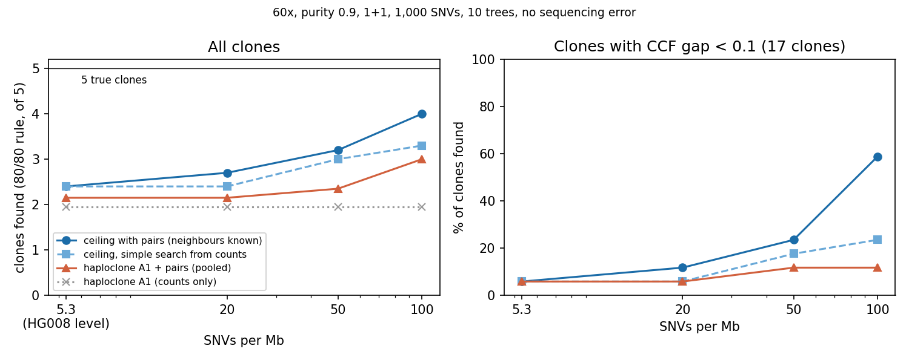
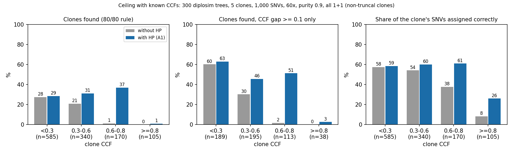

使用者 11-15 定的目標是先完美重建 1+1 SNV 模擬裡 CCF 相近的群。11-15 加了同一條 read 的共現，中心點只多找回 0.20 群。11-16 使用者問：這些相近的群要怎麼解決？差距是資訊不夠、搜尋沒走到，還是評分本身偏掉？
score_tree 小程式，用 haploclone 自己的目標分數算兩棵樹，拆成 prior、read 計數、共現三部分。不改主程式。--prior-tau 0.5／0.2／0.05、uniform-partition、Pitman–Yor。加一棵「假分群樹」（把一群照 VAF 切兩半）當對照。| prior | 現行共現評分：密度 5.3／100 | 綁定 CCF 後：密度 5.3／50／100 |
|---|---|---|
| 現行 CRP | 0／2 | 0／0／2 |
| tau 0.5 | 0／4 | 0／2／8 |
| tau 0.2 | 0／0 | 0／9／11 |
| tau 0.05 | 0／0 | 0／11／13 |
| uniform-partition | 0／0 | 0／10／13 |
| Pitman–Yor | 0／2 | 0／0／2 |

三個結果指向同一件事：60×、單一 sample、1+1、HG008 等級的密度下，CCF 差 < 0.1 的群分不開，原因是資訊不夠，不是 haploclone 的搜尋或 prior 選錯。剩下的選擇是改目標（群層級評分）或寫成限制，這是研究目標的選擇，要帶週會。
全部是離線重算：綁定 CCF 用代入的 CCF 估計值，MAP 樹是現行評分找到的，沒有真的改 haploclone 重跑。只有 10 棵樹 × 2 seed，相近的 clone 只有 17 群、9 對。假分群只測了「照 VAF 切兩半」一種。diplosim 沒有定序錯誤。每 Mb 200 個那組沒補跑。方案乙（群層級）或丙（寫成限制）還沒決定。
資料：/bip8_disk/boyu114/diplosim_c4_2026-11-15/{center,d20,d50,d100}，a1c4pool，10 棵樹 × 2 seed，60×、purity 0.9、5 群、1,000 SNV、read 33 kb
密度掃描：A1＋共現 2.15／2.15／2.35／3.00 群（5.3／20／50／100），只有 100 過門檻（+1.05 [+0.15, +1.95]）
score_tree 核對：重算 MAP 分數與 trace 最大差 4.8e-5
prior 分群項：K × ln α ＋ Σ ln((n − 1)!)，haploclone/rust/src/prior.rs:224-232
綁定 CCF 第一次核對失敗（差 546）：約 6% SNV 對有一邊 snv_hp 為 NA，haploclone 會跳過；修正篩選後差 4.9e-5lab_report/2026-11-15_diplosim_c4_density/README.mdlab_report/2026-11-16_cooccurrence_oracle/README.mdlab_report/2026-11-16_cooccurrence_oracle/oracle_pairs.pylab_report/2026-11-16_cooccurrence_oracle/plot_ceiling.py/bip8_disk/boyu114/haploclone/rust/examples/score_tree.rslab_report/2026-11-16_haploclone_truth_score/README.mdlab_report/2026-11-16_haploclone_truth_score/score_truth.pylab_report/2026-11-16_haploclone_truth_score/score_priors.pylab_report/2026-11-16_haploclone_truth_score/score_ccf_tied.pylab_report/INDEX.mdcargo build --release --example score_tree（haploclone/rust）python3 -I lab_report/2026-11-16_cooccurrence_oracle/oracle_pairs.py /bip8_disk/boyu114/diplosim_c4_2026-11-15lab_report/2026-11-15_diplosim_c4_density/summary_d20.txt、summary_d50.txt、summary_d100.txtlab_report/2026-11-16_cooccurrence_oracle/oracle_pairs_summary.txtlab_report/2026-11-16_cooccurrence_oracle/ceiling_vs_density.pnglab_report/2026-11-16_haploclone_truth_score/truth_vs_map_summary.txtlab_report/2026-11-16_haploclone_truth_score/priors_summary.txtlab_report/2026-11-16_haploclone_truth_score/ccf_tied_summary.txt11-15 刪到剩 9 頁之後，報告要講什麼、照什麼順序？使用者也覺得 HG008 流程頁字太多、圖看不懂。
live_backup/2026-11-16/。報告主軸從「模擬上 HP 在哪些條件有用」擴成三段，HG008 參考樹的產生與驗證放在最前面，用圖講清楚。今天的 CCF 相近群診斷結果還沒放進投影片。
改動都沒 commit。今天下午的兩個實驗（CCF 相近群的診斷、HP 增益依 CCF）還沒加進投影片。刪頁、加頁後還要跑 check_slides.py 與 11-11 附錄 B 自我檢查。第 9 頁 ① 格「就算已知真值 CCF」那句照使用者回覆保留（照舊）。
大綱 v3 先 10 頁；使用者線上刪 sim-stuck、decide 後剩 8 頁；再拆 ref-steps、ref-sc-steps，並放回 decide，成為 11 頁 ref-check 的樹沿用 11-11 版本（細胞模式：每群細胞數、星星＝帶的分支突變）
report/2026_11_18_slides/OUTLINE_v3.mdreport/2026_11_18_slides/REVIEW_v3.mdreport/2026_11_18_slides/BRIEF.mdreport/2026_11_18_slides/gen_ref.pyreport/2026_11_18_slides/gen_sim.pyreport/2026_11_18_slides/gen_c.pyreport/2026_11_18_slides/gen_open.pyreport/2026_11_18_slides/project/deck.jsonpython3 -I gen_ref.py ref_steps（report/2026_11_18_slides）python3 -I preview.py sim-whypython3 tools/check_slides.py report/2026_11_18_slides/report/2026_11_18_slides/project/slides/（11 頁 html）report/2026_11_18_slides/live_backup/2026-11-16/使用者想知道為什麼加 HP 只能幫到部分群，CCF 低或相近的群救不回。假說是：加 HP 只看突變所在那條 HP，VAF 變成兩倍，CCF 越高，資訊量增加越多。
cmp 核對和上限那次逐位元相同。| 分層 | 群數 | haploclone | 增益 [95% 區間] | 上限 |
|---|---|---|---|---|
| CCF < 0.3 | 117 | 20% → 24% | +3.4 [−0.8, +8.1] | 29% → 29% |
| CCF 0.3–0.6 | 71 | 4% → 17% | +12.7 [+5.6, +21.1] | 14% → 21% |
| CCF 0.6–0.8 | 37 | 0% → 35% | +35.1 [+20.4, +52.9] | 0% → 43% |
| CCF ≥ 0.8 | 15 | 0% → 0% | 0 | 0% → 0% |
| CCF 差 < 0.1 | 134 | 4% → 7% | +2.2 [+0.0, +5.0] | 7% → 10% |
| 全部 | 240 | 11% → 22% | +10.8 [+7.1, +14.8] | 18% → 27% |

加 HP 有用，但只幫到「本來就和別群有距離、CCF 中高」的群；它解決不了今天另一項的主題（CCF 相近）。這也解釋 HG008 的 L111（CCF 約 0.93，貼近主幹）為什麼加 HP 也分不出來。11-12「沒看到 HP 改善」用的是 SNV 對分數、樹裡 CCF 0.6–0.8 的群少，和今天的指標不同，不能直接說被推翻。
只有一組設定（60×、purity 0.9、5 群）。CCF ≥ 0.8 只有 15 群。diplosim 的 read 全部有 HP、沒有定序錯誤，真實資料的增益會打折。理論倍數只核對方向，沒做定量比較。不加 HP 時 haploclone 在 CCF 0.3–0.6 比上限差很多（4% 對 14%），原因沒查。
haploclone：-d binomial -b 1000 -n 3000 --num-chains 4，seed 1、2，其他預設 17:06 開跑，22:53 跑完 上限的 SNV 分對比例（≥ 0.8）0.08 → 0.26，方向隨 CCF 一路變大，但沒到 80% 門檻
lab_report/2026-11-16_hp_gain_by_ccf/README.mdlab_report/2026-11-16_hp_gain_by_ccf/hp_by_ccf.pylab_report/2026-11-16_hp_gain_by_ccf/plot_hp_by_ccf.pylab_report/2026-11-16_hp_gain_by_ccf/summarize_hc.pypython3 tools/run_diplosim_haploclone_batch.py /bip8_disk/boyu114/diplosim_hp_ccf_2026-11-16/hc60 --sim-seeds 101-160 --hc-seeds 1,2 --coverage 60 --purity 0.9 --modes base,a1 --jobs 16lab_report/2026-11-16_hp_gain_by_ccf/hp_by_ccf_summary.txtlab_report/2026-11-16_hp_gain_by_ccf/hp_by_ccf_per_clone.tsvlab_report/2026-11-16_hp_gain_by_ccf/hp_by_ccf.pnglab_report/2026-11-16_hp_gain_by_ccf/hc_summary.txtlab_report/2026-11-16_hp_gain_by_ccf/hc_per_clone.tsv/bip8_disk/boyu114/diplosim_hp_ccf_2026-11-16/11-15 刪頁時把 AI 環境頁一起刪了，但 CLAUDE.md 和 11-11 會議自我檢查都要求這一頁。要不要放回來？
這推翻 11-11 會議「報告加入 AI 環境改善」的待辦和 11-13 做好的 ai-env 頁。之後自我檢查遇到這條，照 11-16 的決定算通過。
11-11 會議 summary 附錄 B 的自我檢查清單還留著「報告有 1–2 頁 AI 環境改善」這條，要不要一起改沒確認。CLAUDE.md 改動沒 commit。
使用者同一則回覆也決定：主問題只寫一句（採建議）、第 8、9 頁合併、第 9 頁 ① 那句照舊、前置診斷先不做
CLAUDE.mdmeeting_record/2026_11_11_meeting_summary.mddiplosim seed 6 抽到兩個 SNV 在同一位置，照 CONIPHER 規則停下，整批中斷
為什麼：使用者 13:32 問目前重建演化樹軟體的共同問題，是不是都是 CCF 相近的 clone 群難細分，還有低深度問題。做了什麼：對照 lab_report/INDEX.md 的既有實驗回答，沒有新實驗。結果：是，兩者是同一件事；深度決定 VAF 雜訊，雜訊決定 CCF 要差多少才分得開，單一 bulk sample 讓情況更糟。實測對照：60× 時 CCF 差 < 0.1 的群連已知真值 CCF 的上限也只找回 0–10%；60× 只找回 5 群中約 2 群，400× 已知群數可到 4.90；HG008 深層小分支 ClairS 只 call 到 6／14 和 3／68。另列三個一般領域常見問題（CNA／multiplicity、purity 估錯、同一組 CCF 符合多棵樹），標成推論，還沒對照論文核對。14:22 使用者又問還有哪些問題沒發現，回答併進投影片大綱 v3 的「資料分不開／搜尋卡住」兩類。狀態：只是回答，提議去查 PhyClone、PyClone-VI、CONIPHER、Pairtree 論文確認作者自己寫的限制，使用者沒有接著要求。
lab_report/INDEX.md為什麼：記錄 11-13 23:00 到 11-15 23:00 的工作。做了什麼：在 session 0c330cce 跑 collect_day.sh 與 signals.py，寫 candidates.json，寫 daily/.data/2026-11-15.json，跑 verify_evidence.py、validate_log.py、render.py，最後 collect_day.sh --commit。結果：11-15 日誌呈現 6 項、記錄 4 項。狀態：完成，游標推進到 2026-11-15T23:00:17。
daily/.data/2026-11-15.jsondaily/2026-11-15.html